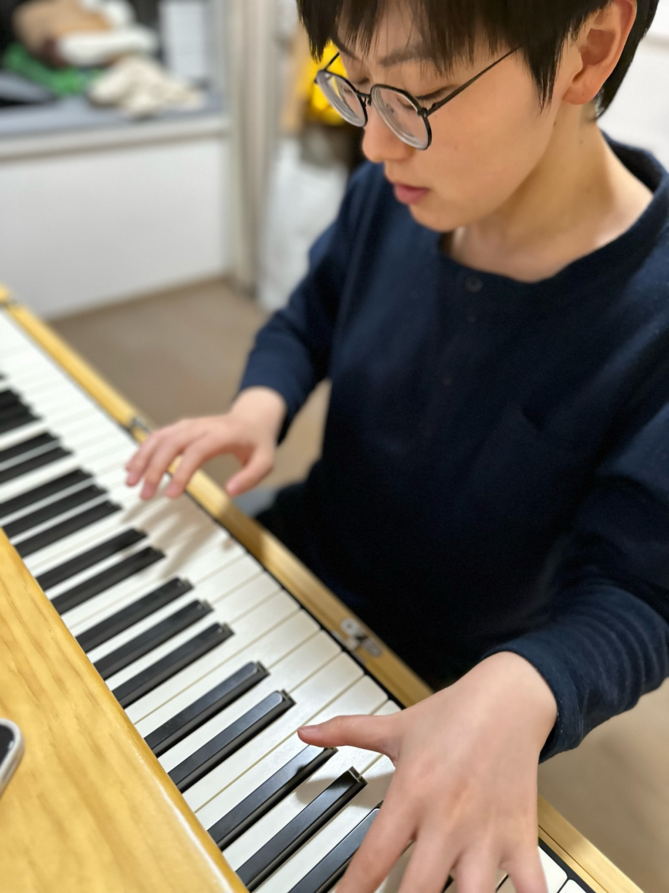

叶熠

小红书：yeyi_JazzPiano
履历总结
- 6年7个月金融科技产品经理+数字化体系搭建及运营经理
- 1个从0到1财富管理体系理财师数字化体系搭建及运营经验
- 2个从0到1大型私募股权&证券基金系统搭建及迭代经验
- N个从0到1数据集成平台及资产管理相关系统搭建及迭代经验
工作经历
- 诺亚控股–国内财管版块-机构经营及AR管理中心-AR管理部 运营高级经理
2022/9/28 – 2023/11/27（1年2个月）
主要工作成果：
- 理财师360度定量评价体系（项目负责人&运营经理）
- 理财师管理仪表盘（项目负责人&运营经理）
- 理财师职级晋升追踪体系（项目负责人&运营经理）
- 理财师名下客户资源流转追踪体系（项目负责人&运营经理）
- 诺亚控股–国内科技部-系统产品部 高级产品经理
2020/6/1 – 2022/9/27（2年3个月）
主要工作成果：
- 理财师数字化管理平台KYA（项目负责人&产品经理）
- 私募证券基金评价系统（项目负责人&产品经理）
- 标签中台（项目负责人&产品经理）
- 平安不动产-信息科技部 产品经理
2017/4/6 – 2020/5/31
主要工作成果：
- 从0到1搭建亿级交易规模基金科技平台及智慧投后模块，实现金融产品管理100%线上化，业务使用人数逐步增加，平台稳定，并在业务系统群中赢得口碑，功能设计被其他业务系统借鉴
- 搭建投融一体化平台、房地产生态一体化数据平台（金融板块）及融资管理、险资管理、销售管理等业务系统
教育背景
- 英国曼彻斯特大学（2023QS世界大学排名第28位）工程项目管理 硕士
2015/9 – 2016/12
- 以Merit成绩毕业
- 主修课程包括项目管理、项目计划及控制、项目金融、风险管理、创新管理、合同管理、员工与组织等
- 东北大学秦皇岛分校 （211&985）自动化 学士
2011/9 – 2015/6
- 2014年美国大学生数学建模竞赛成功参赛奖
- 2013年第五届蓝桥杯全国软件和信息技术专业人才大赛河北赛区单片机设计与开发本科组三等奖
- 2012年校优秀团干部
- 2012至2014年间获得过多次校三等奖学金
核心项目经历
- 理财师数字化管理平台（项目负责人&产品经理）
2021/3 – 2022/9
- 私募证券基金评价系统（项目负责人&产品经理）
2020/6 – 2022/9
- 私募股权基金科技平台（项目负责人&产品经理）
2017/12 – 2020/5
技能
- 通过CFA一级&基金从业资格考试
- 精通使用Axure、Mockplus、Xmind、Visio、Navicat、Microsoft Office等工具
- 精通使用中英文
- 熟悉使用 SQL、Python、HTML/CSS 语言及 Windows/MacOS 系统命令行操作